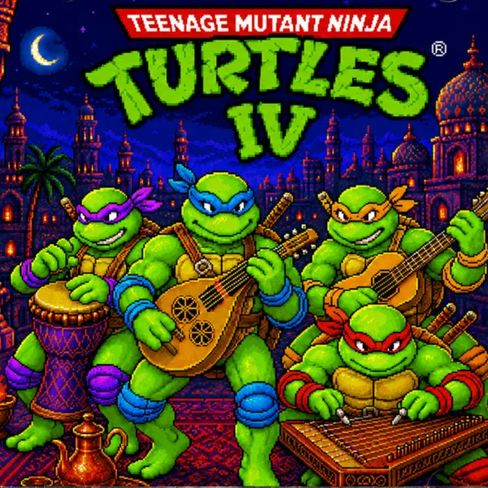

Ninja Turtles IV - Arabian
Arabian and Spanish fusion reimagining the music of Teenage Mutant Ninja Turtles IV: Turtles in Time, the 1992 Super Nintendo brawler. 13 tracks with 20-second previews.
Get this album- 1Alleycat Blues
- 2Big Apple, 3 A.M
- 3Bury My Shell at Wounded Knee
- 4Going UP
- 5Neon Night-Riders
- 6Opening - Turtle Power
- 7Prehistoric Turtlesaurus
- 8Sewer Surfin
- 9Staff Roll - Flying High (Pizza Power)
- 10Star Base Where No Turtle Has Gone Before
- 11Technodrome let's kick shell
- 12Technodrome ~ The Final Shell Shock
- 13Turtle Select